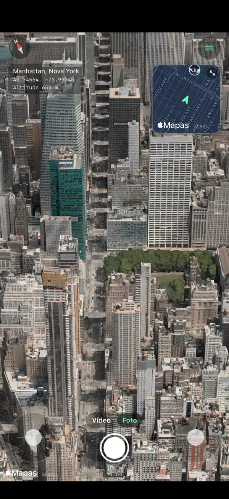
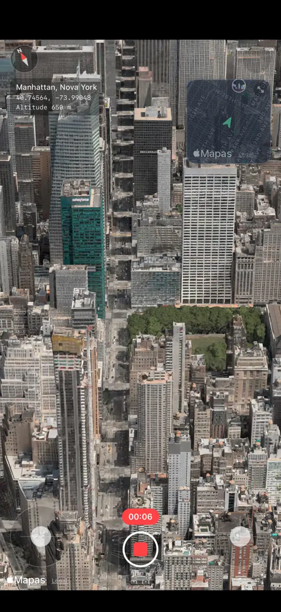
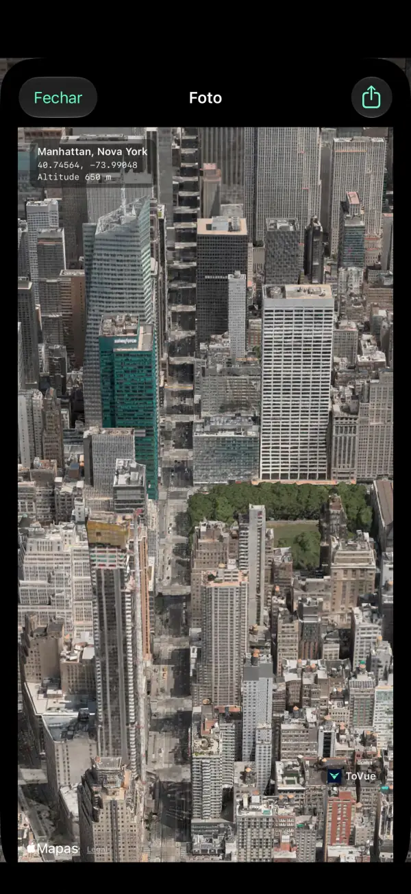
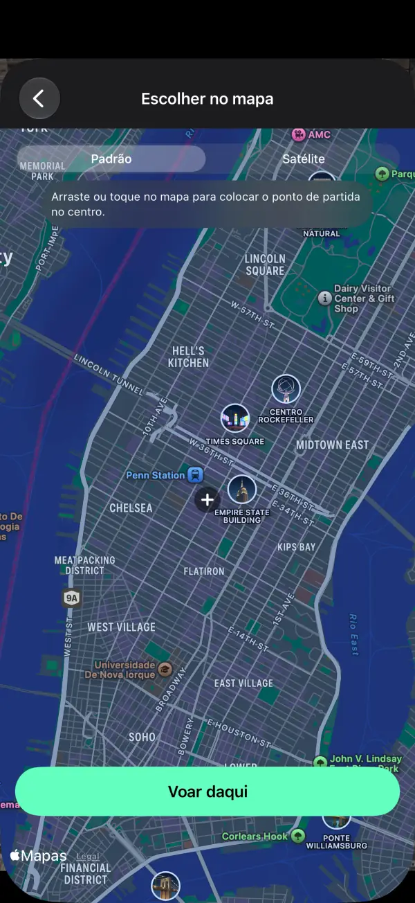
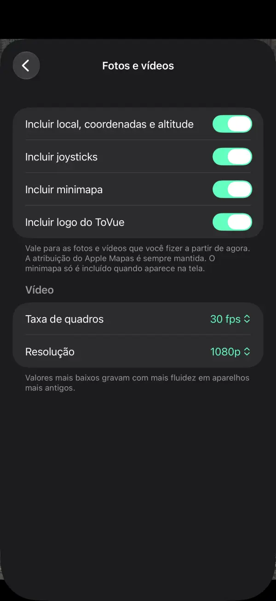

Sobrevoe mapas 3D como um drone.
Voe sobre as cidades do mundo no iPhone e no iPad.
Guarde a vista em foto ou vídeo — só o mapa, sem os controles na tela.
 Grátis · Sem cadastro · Sem acesso à localização
Grátis · Sem cadastro · Sem acesso à localizaçãoO que você pode fazer
Voe com os controles e guarde a vista exatamente como você a vê.
Voe livremente
Suba, gire e avance com dois controles na tela — ou com um dedo só no Modo uma mão.
Minimapa
Veja onde você está e para onde está virado. Toque nele para escolher um novo lugar no mapa.
Grave vídeos
Alterne entre Foto e Vídeo como no app Câmera e grave seu voo.
Fotos só do mapa
Capture a vista sem os controles, com nome do lugar, coordenadas e altitude, se quiser.
Vá a qualquer lugar
Busque ou escolha um ponto no mapa e comece a voar dali na hora.
11 idiomas
Português, inglês, japonês, chinês, coreano e mais. Para iPhone e iPad.
Capturas de tela





Preços
Tudo é gratuito. Prefere sem anúncios? Compre uma única vez.
Básico
- Todos os recursos de voo, foto e vídeo
- Um banner e um anúncio em tela cheia depois de mudar de lugar
- Logo do ToVue nas fotos e vídeos
Remover anúncios e logo do ToVue
- Uma única compra, não é assinatura
- Nenhum anúncio
- Opção de tirar o logo do ToVue das fotos e vídeos
Bom saber
- O ToVue é um visualizador de mapas virtual. Ele não controla um drone de verdade e não é uma ferramenta de navegação nem de planejamento de voo.
- Os prédios e o relevo 3D vêm do Mapas da Apple, e o nível de detalhe varia conforme a região.
- É preciso estar conectado à internet. O ToVue nunca usa GPS nem pede sua localização.
- A atribuição do Mapas da Apple sempre fica nas fotos e vídeos.
Vá capturar a vista do alto.
Grátis · Sem cadastro · Sem acesso à localização